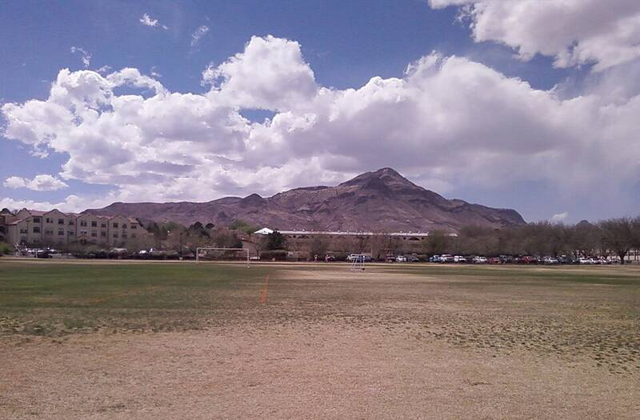

Socorro landing
New Mexico, 1964

Police officer Lonnie Zamora reported a whitish, O-shaped craft and two figures in white overalls. One of Blue Book's best-known unexplained cases. 1
Open in the interactive Watcher
Related
- An egg-shaped craft landed at Socorro Claim
- Lincoln LaPaz Person
- J. Allen Hynek Person
- Lonnie Zamora Person
Sources
- Lonnie Zamora incident Wikipedia